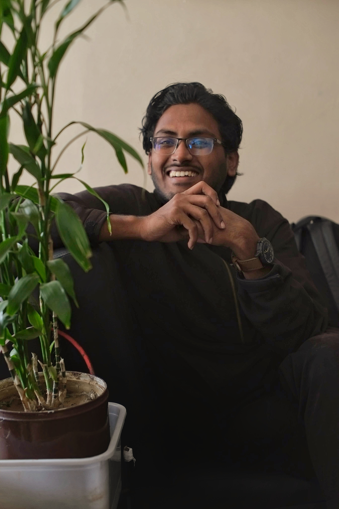

I’m a Computer Science and Engineering graduate with a strong foundation in JavaScript, TypeScript, and React, actively seeking full-time opportunities as a Software Engineer or an Associate Software Engineer. My journey is guided by a passion for computer security, with my undergraduate thesis focused on Self-Sovereign Identity (SSI) and a growing interest in blockchain and smart contract development. I thrive in full-stack environments — from crafting interactive UIs to building and testing scalable APIs. I use Ubuntu as my daily driver since 2022 and with a solid understanding of Linux internals, computer networking, Docker, and cloud platforms like AWS, I often dive deep into the systems side of development — from deploying containers to debugging low-level OS/network behavior. Have hands-on experience with tools across the development lifecycle: Postman, JMeter, Prometheus, Grafana, and automation/testing pipelines. I'm currently deepening my backend knowledge with FastAPI, while exploring cutting-edge AI technologies including RAG (Retrieval-Augmented Generation), LLMs, and AI agents. I aim to become a Pi-shaped engineer — with deep expertise in backend, DevOps, and security, supported by broad knowledge across the stack. Let’s connect if you’re working in software engineering, security, or AI-driven systems — or just want to share knowledge and ideas!
Radiant Data systems | November 2025
Omukk | June 2025 - September 2025
Built a web platform for sexual harassment reporting and tracking for our University, which was awarded runners up for E-governance and Innovation Showcasing. Entire project was maintained with proper requirements engineering and software development life cycle. Tools Used: Figma · React · Express.js · Tailwind CSS · MongoDB · Postman.
Designed and developed a full-stack online sports shop as a single vendor e-commerce to sell various sports instruments. Used ExpressJS and MySQL together without any ORM. Tools Used: React · Express · MySQL · Bootstrap.
Developed a student-teacher course management platform using relational database. Used Apache Tomcat server for JSP pages. Tools Used: Apache TomCat · JavaServer Pages (JSP) · MySQL · Bootstrap.
Developed a children's word making game using Java Swing. The player has to move a snake avoiding obstacles and dangers to collect letters for making the word in the display. Tools Used: Java · Java Swing.
Developed a priority-based kanban style task tracker with database and Google authentication integration using Supabase. Implemented a Korean party game in React for fun. Tried some libraries for visualizing cryptocurrency prices and stock market. Tools Used: Docker · React · Tailwind CSS · Vercel · Supabase.
Shahjalal University of Science & Technology (SUST) | February 2020 - July 2025
Notre Dame College, Dhaka
Ideal School & College, Motijheel Dhaka
ICPC Asia Dhaka Regional Site Online Preliminary Contest in 2022 and 2021
Intra SUST programming contest 2023
1st Runners Up
Awarded runners up for E-governance and Innovation Showcasing at SUST
Advanced to Next Round
Attended the prestigious Code Samurai 2024 Preliminary and moved on to the next round with selected top 300 teams in Bangladesh
Champion
Became champion by building an MVP of a multi-vendor e-commerce platform with features of pro users, payment gateway, bidding for customers and others
Secretary of Organizing
Organized workshops on git, software development, and hackathons as Secretary of Organizing (Deputy Head of a team of 9 persons) in SUST ACM Student Chapter
Organizer and Publication Secretary
Organized the hackathon in SUST CSE Carnival 2024 leading a team of 15. Worked as a sub-editor in the carnival magazine as Publication Secretary of CSE Society, SUST
Volunteer
Contributed to a diverse range of volunteering activities, including WordCamp Sylhet
Thesis | 2024–2025
Worked on an undergraduate thesis focusing on building a performance measurement framework for blockchain-based SSI applications. It focuses on simulating and testing various SSI cloud agent APIs, integrating JMeter, Prometheus, and Grafana to show performance comparisons.
Machine Learning Project | 2024–2025
Worked on a machine learning project for academic purposes, focusing on comparing and evaluating model performances for best results on Bangla song genre classification. Used CNN, FNN, various BERT models, and transformer models including DistilHuBERT, ASTFineTuning, and Wav2Vec2.
Download my resume
Feel free to reach out for collaborations, opportunities, or just to connect!